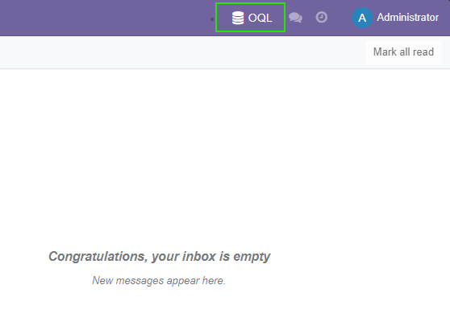
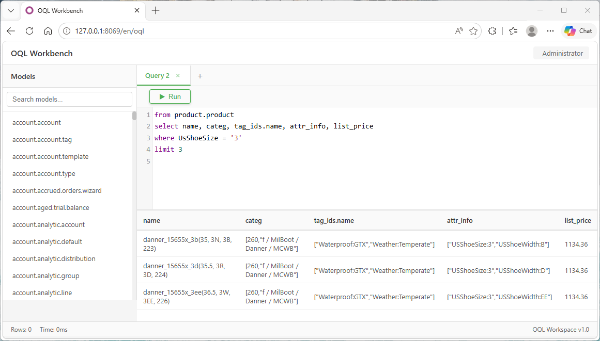

Type-to-search: replace Odoo's click-based search with a powerful text query bar featuring syntax highlighting, autocomplete, and intelligent search capabilities.
Advanced Search, Power Search, Smart Query, SQL Query
# 4 preparatory searches
boot_catg = env['product.category'].search(...)
danner_brand = env['product.category'].search(...)
size_values = env['product.attribute.value'].search(...)
waterproof_tags = env['product.template.tag'].search(...)
# Complex domain
domain = [
('categ_id', 'child_of', danner_brand.ids),
('product_template_attribute_value_ids...', 'in', size_values.ids),
('tag_ids', 'in', waterproof_tags.ids)
]
products = env['product.product'].search(domain)
products = env['product.product'].searcho( "CatgS = 'Boot' and Brand = 'Danner' and EuShoeSize in ('40', '40.5') and Waterproof" )
Business terms No prep searches Readable by anyone
For advanced query development, access the full-screen IDE from the top navigation bar:

Click the OQL button in navigation bar

Full-screen IDE with multi-tab support
Manage multiple queries
Quick query creation
Never lose your work
Cross-device backup
Install the required dependencies for Advanced Search:
oql module. Install it first:oql_web-x.x.x.zip
oql_web folder to your Odoo addons path
?debug=1 to your URLSwitch to OQL mode and start searching with business language:
OQL button on the left side of the native search bar. Click it to switch to OQL mode.
Enter to execute your query. Results will appear just like native Odoo search.
Pro Tips:
Your search history is automatically saved
Toggle back to native search anytime
State persists across page refreshes
Start writing business-focused queries and simplify your Odoo data searches today!
Want the intelligent autocomplete feature shown in the preview GIF above? Install the oql_pro module for advanced code completion and smart suggestions.
Get oql_pro:
https://apps.odoo.com/apps/modules/15.0/oql_proInstall Advanced Search and start writing queries with syntax highlighting and intelligent search!
View Advanced Search on GitHub